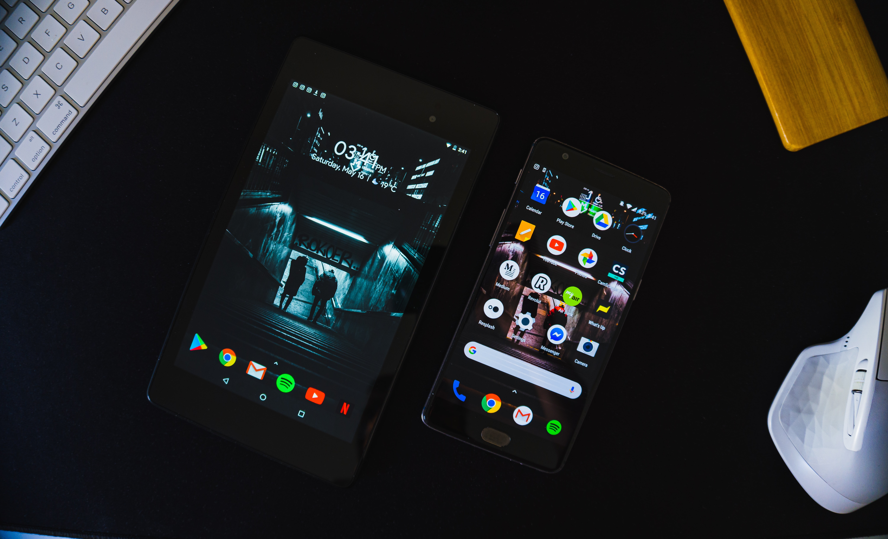

Mobile-friendly websites were the trend of yesterday, while mobile apps are the
trends of today! Mobile Apps are not limited to only e-commerce websites but are extended to brands
across
all industrial sectors, no matter the nature and size of the business.
Speaking of Mobile Apps, Fortune Minds Inc. works with a team of mobile application
developers to develop forward-thinking apps for businesses across the globe. We worked with e-commerce
business owners, foodpreneurs and much more to roll out apps that suit their business requirements.
Our experts have listed out 10 tips to launch a successful mobile app development project and
create anapp that improves user engagement and experience.
Tip #1 Do not underestimate the importance of Testing
While Development is an important phase, testing is the most crucial area of mobile app
development
that cannot be overlooked. Whether it is a mobile game or a retail store, it is always
essential to
ensure your apps has little or no bugs that could totally push your users away from your
app.
Tip #2 Do not tend to Overdo
As much as a beautiful, cute, bright-colored app seems to look good, it is essential to keep
the UI
more vision-friendly, and minimal. Minimalistic designs are a great way to tap the GenY and
GenZ
audience.
Tip #3 Identify the core principle
Before launching app development, you need to have clear information about the nature and
purpose of
the app to make sure the process heads from A to B and not A to C.
Tip #4 Know your audience
Understanding your audience demographics helps in order to create an app that identifies and
address
their preference and creates more engagement.
Tip #5 Focus on Load Time
Creating a bulky app that uses more data and exhibits a slow load time is a big no-no.
Hence, it is
essential to focus on load time as well while developing an app.
Leave Your Comments here: